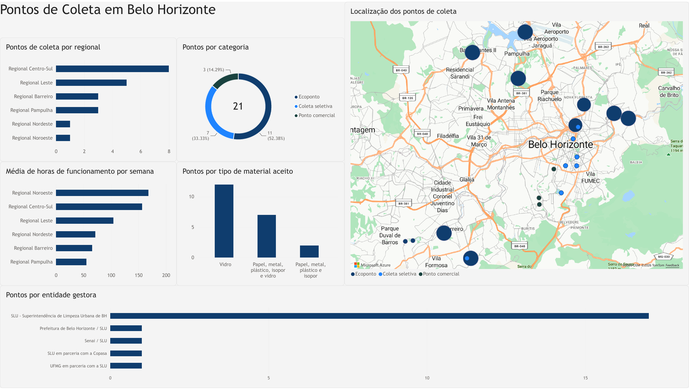

Azul
Papel e papelãoJornais, revistas, caixas e folhas, sempre secos e limpos.
Aprenda a separar seus resíduos, descubra onde entregá-los em Belo Horizonte e acompanhe os dados em um só lugar.
Role a página e acompanhe pela lateral onde você está ↓Este trabalho apresenta um painel de Business Intelligence que mapeia e organiza os pontos de coleta de materiais recicláveis em Belo Horizonte. A partir de dados sobre ecopontos, coleta seletiva e pontos comerciais, o painel mostra a distribuição por regional, o tipo de material aceito, o horário de funcionamento e a entidade gestora de cada ponto, para facilitar o planejamento e o acesso da população à reciclagem.
Encontre no mapa os pontos de coleta de Belo Horizonte, entre ecopontos, coleta seletiva e pontos comerciais. Depois, toque no que você quer descartar e veja como separar antes de entregar.
Mapa do painel de Power BI do trabalho.
Área de aprendizado
Os 3 Rs orientam o programa de coleta seletiva de Belo Horizonte. A ordem importa: primeiro evite o resíduo, depois reaproveite e, por fim, recicle.
Compre só o necessário, evite descartáveis e prefira embalagens retornáveis.
Dê um novo uso a potes, caixas e sacolas antes de jogar fora. Conserte o que for possível.
Separe o que não dá para reaproveitar e leve até a coleta seletiva.
Separar os resíduos por cor facilita a coleta e a reciclagem. Conheça as principais cores da coleta seletiva no Brasil, definidas pela Resolução CONAMA 275/2001, e o que vai em cada uma.
Acompanhe os indicadores dos pontos de coleta de Belo Horizonte, como a distribuição por regional, os materiais aceitos, os horários de funcionamento e as entidades gestoras.

Conheça a equipe que desenvolveu este projeto! Somos da PUC Minas e criamos a Verdata em um trabalho de Business Intelligence sobre a coleta de recicláveis em Belo Horizonte.